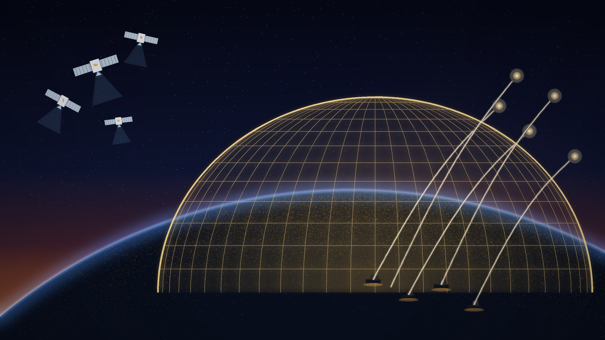

BREAKING: Senate bill puts $9.4 billion for Golden Dome into the base defense budget
Senate appropriators have written $9.4 billion for Golden Dome into a $1.072 trillion FY2027 defense bill, converting money the White House sought through stalled reconciliation into regular discretionary funding. The official summary also lists $35.6 billion for air and missile defense, including $32 billion for interceptors and $812 million for two THAAD radars. The bill still needs a Senate vote and a House deal before the Dec. 11 CR expires.

WASHINGTON — Senate appropriators have written $9.4 billion for Golden Dome into a $1.072 trillion fiscal 2027 defense spending bill, moving the missile-shield money out of a stalled one-time reconciliation request and into regular discretionary funding. The official committee summary, posted Monday night, Nov. 16, calls it funding “for Golden Dome initiatives that the Administration requested as mandatory spending.”
The bill is not law. It still has to pass the Senate and be reconciled with the House before government funding expires on Dec. 11, and the $9.4 billion falls short of the Pentagon’s ask for the program this year. Defense subcommittee chair Sen. Mitch McConnell (R-Ky.) said converting that sum “from a one-time funding request to a full-year investment” sets “the floor for future commitments.”
The Senate Appropriations Committee released the Defense bill Monday as part of a five-bill funding package. McConnell said it is written at “the discretionary defense budget request topline of $1.072 trillion.” The official summary rounds that to “nearly $1.1 trillion” for the Defense Department and the U.S. Intelligence Community. Just the News reported that military construction is not in this bill.
Nearly $69 billion that the administration had sought as one-time mandatory spending is instead provided as discretionary funds, the summary says, “in order to provide stable, sustainable, and predictable funding for critical capabilities across the Joint Force.” Golden Dome is one of the programs pulled into that shift. The White House had sought $1.5 trillion overall, including $350 billion through a reconciliation bill that has not moved, Breaking Defense reported.
McConnell, in a statement issued with the committee release, called the bill “a roadmap to sustainably and responsibly delivering generational investments in the national defense,” adding, “Deterring these threats is a project bigger than one-time surges of cash.”
The official summary groups air and missile defense with Golden Dome and provides $35.6 billion for those capabilities, including $812 million for two additional THAAD radars, $32 billion for additional defensive interceptors, and $170 million for software development and integration. It then says the bill “also provides $9.4 billion in discretionary funds for Golden Dome initiatives.” McConnell described the $35.6 billion as funding “for air/missile defense and Golden Dome.” The summary does not say whether the $9.4 billion sits inside the $35.6 billion total or is in addition to it.
Breaking Defense reported in August that the fiscal 2027 Golden Dome request was about $17.5 billion, with only some $400 million in the base budget and the rest tied to reconciliation. The same bill includes $47.2 billion for munitions, of which $40.6 billion would fund new multiyear contracts for nine weapons: AMRAAM, Guided Multiple Launch Rocket Systems, PAC-3 MSE, Precision Strike Missile Increment 1, Standard Missile-3 Block IB and Block IIA, Standard Missile-6, THAAD interceptors, and Tomahawk.
The official summary does not break the $9.4 billion Golden Dome pot into line items for space-based sensors, space-based interceptors, the Space Development Agency, or the Missile Defense Agency. It says the investment “will advance the defense of critical infrastructure in the United States and its territories against complex ballistic, hypersonic, and cruise missiles, and other advanced aerial threats.”
Under a separate Space Force heading, the bill lists $13.8 billion for procurement and $32.3 billion for research and development, including a $3.3 billion increase for the space data network, a $2 billion increase for space-based airborne moving target indicator capability, a $520 million increase for the Next-Generation Overhead Persistent Infrared Polar program, and $7.1 billion for 54 National Security Space Launch missions. The summary does not assign those Space Force lines to Golden Dome.
How much the shield will ultimately cost remains in dispute. CBO’s David Mosher has said a comprehensive system consistent with the originating executive order could cost up to $1.2 trillion over 20 years. Gen. Michael Guetlein, the Space Force officer running Golden Dome, has put the administration’s plan at $185 billion through 2035 and has argued the CBO figure “is not estimating what we are building.” The Washington Times reported Nov. 16 that Congress has approved roughly $39 billion over the past two years for technology tied to the project; that figure is the paper’s, not a line in the new Senate bill.
The bill still needs a Senate floor vote. Its topline then has to be reconciled with a slightly lower House appropriations figure, Breaking Defense reported, and congressional leaders have until Dec. 11, when the current continuing resolution expires. If they miss that date, they will have to extend the CR or face a shutdown. Until a conferenced bill is enacted, the $9.4 billion is a proposed number, not appropriated cash.
Whatever architecture Congress ultimately funds will run through the missile-defense community centered at Redstone Arsenal, home of the Missile Defense Agency and U.S. Army Space and Missile Defense Command. Guetlein made the funding stakes plain at the Space and Missile Defense Symposium in Huntsville on Aug. 11, warning that without a path through the 2027 budget, “there is no Golden Dome, because there is no funding.” Senate appropriators have now offered a path, at a lower figure, by putting Golden Dome into the base bill. Whether that floor holds in a House-Senate deal before Dec. 11 is the next test.
Sources
-
Senate Appropriations Committee (Republicans)
Defense, 2027 (bill summary)
-
Senate Appropriations Committee
Senate Appropriations Committee Releases Final Five FY 2027 Funding Bills
-
Sen. Mitch McConnell (post via Forth)
$35.6B for air/missile defense and Golden Dome… setting the floor for future commitments
-
Sen. Mitch McConnell (post via Forth)
Today, the Defense Appropriations Subcommittee posted our bill… at the discretionary defense budget request topline of $1.072 trillion
-
Breaking Defense
Senate appropriators unveil $1.1T Pentagon spending bill, folding in reconciliation priorities
-
The Hill
Senate Republicans unveil nearly $1.1 trillion defense bill for 2027
-
Just the News
Senate Republicans propose nearly $1.1 trillion defense appropriations bill for fiscal year 2027
-
The Washington Times
Golden Dome funding hangs in balance of defense budget fight
-
Breaking Defense
Pentagon rebuffed repeated requests for Golden Dome brief: CBO